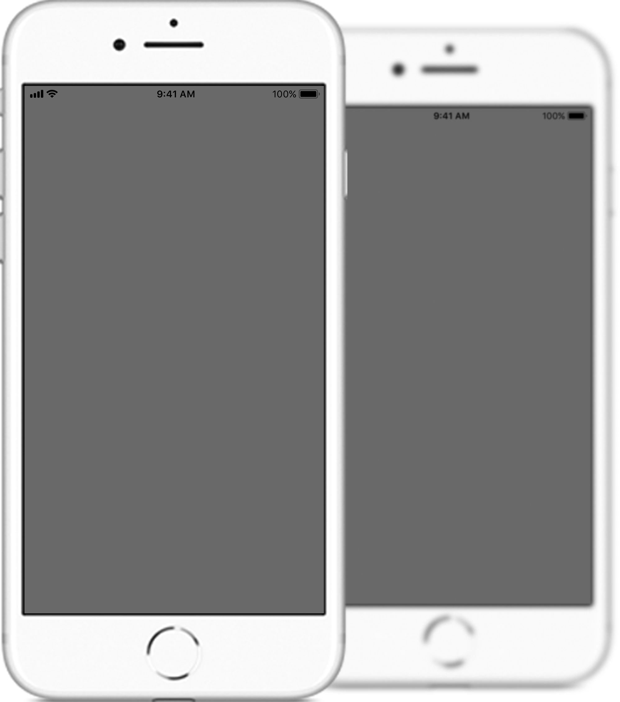

Você tem ideia de como é percebido?
O que é percep?
Todos possuem uma imagem, e de alguma maneira, se importam com ela. E se você pudesse saber aquilo que pensam de você?
Percep é um chabot brasileiro que permite que pessoas troquem percepções anonimamente sobre os atributos delas.
Lembre-se de que todo feedback é um presente.
Como funciona?
Chama no messenger
Clique no botão “Começar”
Escolha seus atributos
Selecione 6 que você mais se identifica
Vote nos seus amigos
Indique através de estrelas quão bom ele é
Dê uma olhada no perfil
Veja em quais atributos você e seus amigos se destacam
Ganhe pontos
Vote e consiga mais atributos
Você disse chatbot?
Sabe aquele SMS que você recebe da sua operadora dizendo que seus créditos acabaram, mas pedindo para que responda “sim”, caso queira mais pacote de dados?
Esse é um exemplo de bot programado para atuar com respostas automáticas.
Os chatbots, consequentemente, geram interações através de conversas entre pessoas e robôs, por isso o termo (chat+bot).
Percep está disponível na plataforma do Facebook Messenger.
E não se preocupe caso pareça confuso. É incrivelmente simples ;)